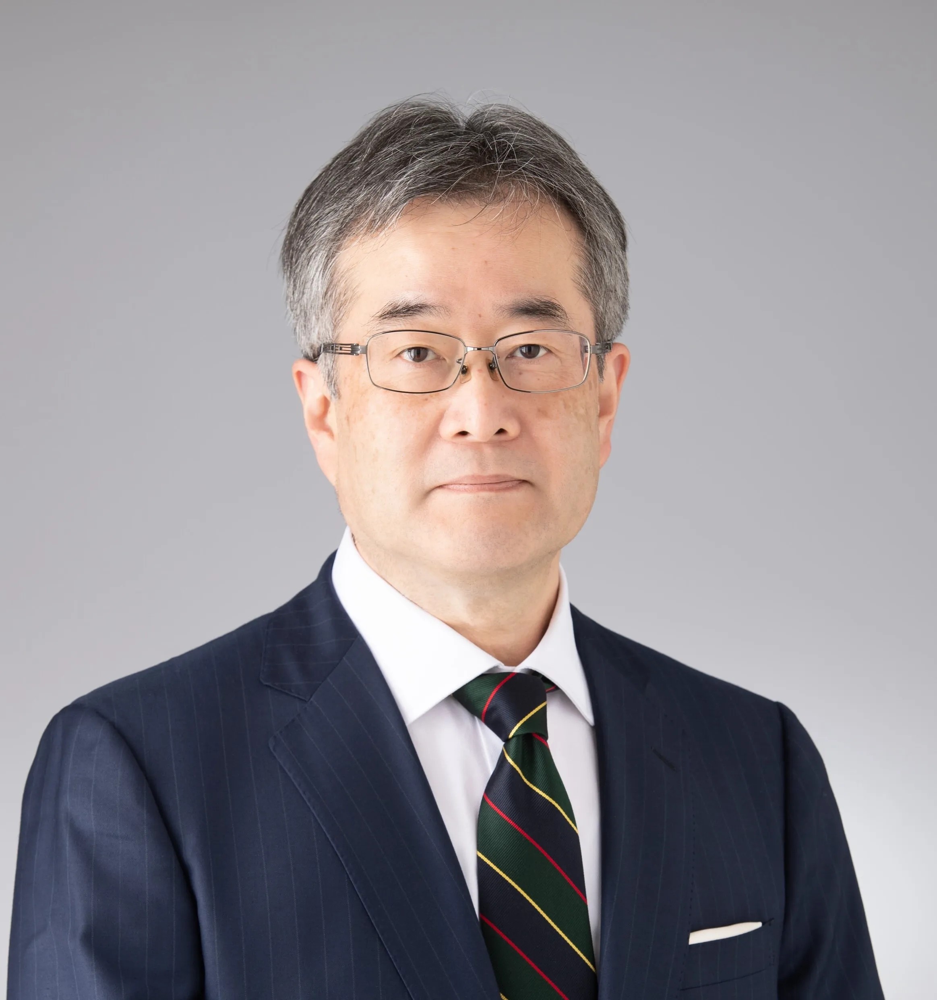

大倉山祭は神戸大学 医学部 楠キャンパスで
毎年秋に開催される学園祭です。
今年は11月1日(日)に開催します！
模擬店、ステージ企画、お笑いライブなど、
盛りだくさんの内容でお届けします！
日時
2026年11月1日(日) 9:00〜19:00
場所
大倉山公園 噴水広場

大倉山祭は神戸大学 医学部 楠キャンパスで
毎年秋に開催される学園祭です。
今年は11月1日(日)に開催します！
模擬店、ステージ企画、お笑いライブなど、
盛りだくさんの内容でお届けします！
日時
2026年11月1日(日) 9:00〜19:00
場所
大倉山公園 噴水広場

神戸大学医学部長 勝二 郁夫先生
大倉山祭の開催にあたり、一言ご挨拶を申し上げます。本年も大倉山祭の季節がやってまいりました。大倉山祭は、神戸大学医学部生にとっての一大イベントです。医学の勉学や実習に追われる日々から束の間離れ、大学生らしい学園祭を開催し、大学の仲間や地域の皆さまと共に楽しい時間を共有する、青春の貴重な機会となっています。
大倉山祭は、企画の立案から連営、当日の進行に至るまですべてを学生自身の手で担う、学生主体のイベントです。各クラブによる模擬店やステージ企画、普楽やダンスなどのパフォーマンスを通して、学生はもとより、近隣の皆さまにも楽しんでいただける催しとなることを心より期待しております。
本年度のテーマは「紡」です。学生一人ひとりのつながり、先輩から受け継いできた大倉山祭の伝統、そして地域の皆さまとの交流を一本一本の糸に見立て、それらを「紡ぐ」ことで一つの大きな大倉山祭をつくり上げ、さらに次の世代へとつないでいきたいという思いが込められています。
大倉山祭は、学生にとってかけがえのない学びの場でもあります。仲間と知恵を出し合い、試行錯誤を重ねながら一つのものをつくり上げる経験は、貴任感や協働の力を育み、やがて患者さんや地域社会に寄り添う医療人としての姿勢にもつながっていくことでしょう。勉学や実習の合間を縫って準備に打ち込んできた学生たちの努力に、心から敬意を表します。
開催にあたり、温かいご支援とご協力をいただきました地域の皆さま、関係者の皆さまに、厚く御礼申し上げます。大倉山祭を通じて地域の皆さまとの交流を深め、共に学び、共に楽しむことは、医学生の成長にとって大きな糧となります。大倉山祭が学生一人ひとりにとって素晴らしい思い出となり、そして、これからの学びと成長を支える力となることを心より祈念いたします。
大倉山祭実行委員長 田村 嘉規
2026年度大倉山祭の開催にあたり、実行委員長としてご挨拶申し上げます。本年度、大倉山祭実行委員長を務めております、医学科3回生の田村嘉規です。
大倉山祭は、神戸大学医学部の学生が主体となって企画・連営する学園祭です。日頃はそれぞれの勉学や実習、課外活動に励む学生たちが、学年や所属の垣根を越えて協力し、一つの行事を作り上げる貴重な機会でもあります。また、学生同士の交流だけでなく、地域の皆様や日頃からお世話になっている方々とのつながりを深められることも、大倉山祭の大きな魅力だと考えています。
今年度の大倉山祭のテーマは「紡（つむぐ）」です。この一文字には、「結」「努力」「交流」という三つの思いを込めています。今年度の大倉山祭のテーマは「紡（つむぐ）」です。この一文字には、「結」「努力」「交流」という三つの思いを込めています。
一つ目の「団結」は、学生一人ひとりの力を合わせ、一つの大きな行事を作り上げることです。準備を進める中では、意見がぶつかったり、思い通りに物事が進まなかったりすることもありました。しかし、そのたびに互いに知恵を出し合い、支え合うことで、一人では成し遂げられないことも実現できるのだと実感しました。
二つ目の「努力」は、今日という一日のために積み重ねてきた準備や挑戦です。各企画の担当者をはじめ、多くの学生が授業や実習の合間を縫いながら準備に取り組んできました。その一つひとつの努力が実を結び、ご来場の皆様の笑顔につながることを心から願っています。
そして三つ目の「交流」は、この大倉山祭を通じて生まれる新たな出会いやつながりです。学生同士はもちろん、地域の皆様やご来場いただいた方々との交流を通して、普段の大学生活では得られない経験や発見が生まれることを期待しています。
また、大倉山祭は決して私たち学生の力だけで開催できるものではありません。特に今年度は、準備を進める中で様々な課題に直面しましたが、そのたびに多くの方々から温かいご支援とご協力をいただきました。皆様のお力添えがなければ、今年の大倉山祭を開催することはできなかったと強く感じております。開催にあたりご尽力いただいた先生方、大学関係者の皆様、協費・ご寄付をいただいた皆様、地域の皆様、そして共に準備を進めてきた実行委員をはじめとする学生の皆さんに、この場をお借りして心より礼申し上げます。
これまで先輩方が築き上げてこられた大倉山祭の歴史と伝統を大切にしながら、今年ならではの新たな魅力を加え、次の世代へとつないでいきたいと考えています。
本日の大倉山祭が、ご来場いただいた皆様にとって笑顔あふれる一日となり、ここで生まれた出会いや思い出が、これからも長く心に残るものとなれば幸いです。
最後になりますが、大倉山祭に関わってくださったすべての皆様に、改めて深く感謝申し上げます。